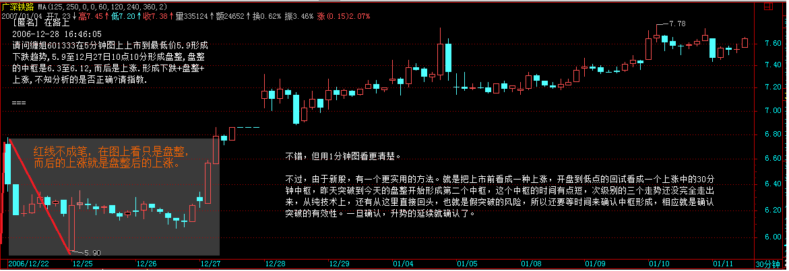
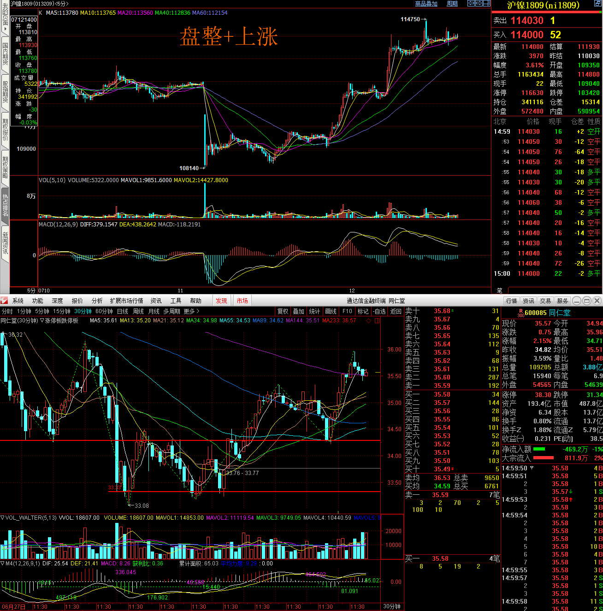
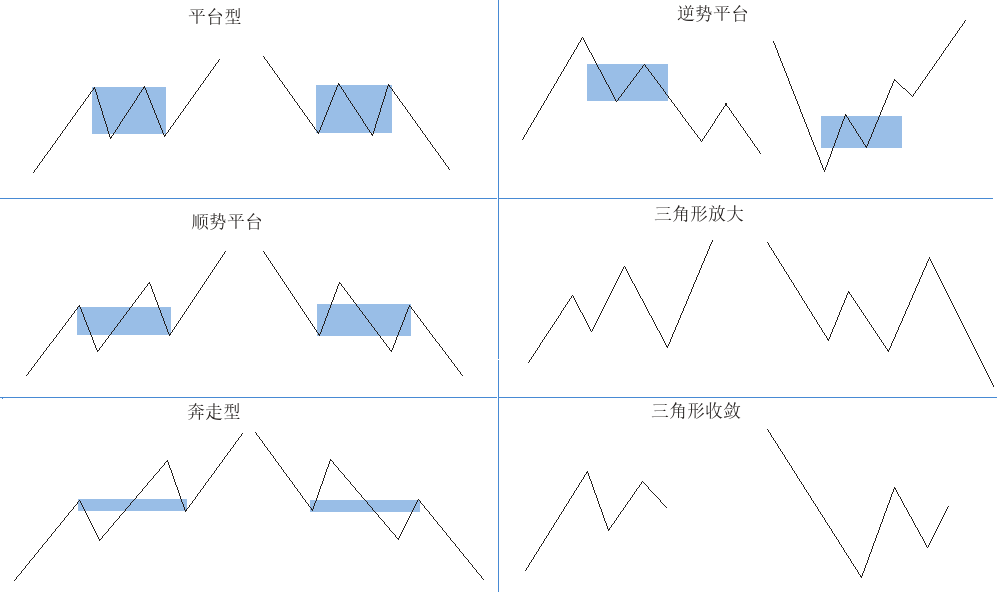

读了这么久，这才是真谛技术只是最粗浅的东西，同样的技术，在纯技术的层面，在不同人的理解中，只要能正确地理解里面的逻辑关系，把握是没有问题的，但关键是应用，这里就有极大的区别了。市场充满了无穷的诱惑与陷阱，对应着人的贪婪与恐惧。单纯停留在技术的层面，最多就是一个交易机器，最近即使能在市场中得到一定的回报，但这种回报是以生命的耗费为代价的。无论多大的回报，都抵不上生命的耗费。生命，只有生命才能回报，生命是用来参透生命 ，而不是为了生不带来、死不带走的所谓回报。
- 这个行当首先要克服的就是贪婪和恐惧，技术在此基础上才有了意义；
- 走势是无位次的，操作是有位次的，有所为，有所不为；
第7课
下图尚未考虑到大盘和个股的关系，看看怎么分类里了：
- 将大盘分成根据牛市、熊市变化分成几个不同阶段，选择不同的买卖点。
- 牛市末期，熊市初期 熊市中期，牛市初期/周买点，月买点。
- 大盘涨跌和个股的操作关系：大盘是卖点，个股是买点/大盘是买点，个股是卖点，大盘在横盘（下降趋势的横盘）上升趋势的横盘，第几个横盘，个股是买点是横盘中的二买还是横盘中的一买，等等，需要总结进行完全分类。同时还有考虑到板块形态。
- 也要考虑到资金管理和大盘的关系，个股的关系。
大形态 小形态 建仓 出仓 建仓 出仓 买点 止损 卖点 止盈 买点 止损 卖点 止盈 均线理论 1. 250/70/35日线突破+周成交压力线。
2. 中线如果连三十天线都没跌破 ， 证明走势很强。
3. 盯着所有放量突破上市首日最高价的新股以及放量 突破年线然后缩量回调年线的老股1. 一种是缓慢推升的， 一旦出现加速上涨， 就要时刻注意出货的机会。
2. 第一波就火暴上涨，调整后第二波的上涨一旦出现背弛或放巨量的 ，找机会走人 。中枢理论
在牛市中 ， 一定要严重关注成分股 ， 特别有一定资金规模的 ， 成分股都是大部队在战斗 ， 别整天跟那些散兵游勇玩 ， 那些人自己都自身难保 ， 本 ID 看这种所谓游资被消灭的都看到麻木了 ， 大资金就爱吃他们 ， 几个亿几个亿吃他们
第8课
- 投资市场最重要的指标就是高潮度，一个长期没有高潮的市场，就如同没有G点的石男，是不值得任何> 关注的。
- 萌动之前，都是不值得投资的。萌动之后，才值得投资。萌动标准：成交量压力线的突破，250天线的突破，70天线的突破，35天线的突破，甚至30分钟途中相应的均线突破。萌动才开始有高潮度。
- 做多气氛浓烈的市场中，比如牛市，买点的成功率比较高，自然卖点的成功率就低。
- 股市中，反应市场气氛重要的指标就是市场指数和板块指数
- 如果某一天，市场指数出现了买点，那么个股的买点也是准确率较高。甚至个股还没有完全准备好，也有较大形成买点的机会。
第9课
笔中枢 、 线段中枢级别对应关系
- 5 分钟的走势类型 = 30 分钟的一个线段 = 日线的一笔 （这是日线的走势类型还是5分钟的走势类型？）
- 1 分钟的走势类型 = 5分钟的一个线段= 30 分钟的一笔
- 1 分钟的走势类型包含的中枢 = 1 分钟的线段中枢 = 5 分钟笔中枢 = 30 分钟的 1 笔中的重叠K线
- 5 分钟的走势类型包含的中枢 = 5 分钟的线段中枢 = 30 分钟的笔中枢 = 日线的1笔中的重叠K线
缠论文章的术语级别理解
- 参考第21课中的对于大盘年中枢的描述：年中枢是季线的笔中枢？
三个互相独立的程序减少早泄的可能。
- 首先 ， 技术指标 ， 都单纯涉及价量的输入而来 ， 都不是独立的 ， 只需要选择任意一个技术指标构成一个买卖程序就可以 。 对于水平高点的人来说 ， 一个带均线和成交量的 K 线图 ， 比任何技术指标都有意义 。
- 其次 ， 任何一个股票都不是独立的 ， 在整个股票市场中 ， 处在一定的比价关系中 ， 这个比价关系的变动 ， 也可以构成一个买卖系统 ， 这个买卖系统是和市场资金的流向相关的 ， 一切与市场资金相关的系统 ， 都不能与之独立 ；
- 最后 ， 可以选择基本面构成一个甄别 “ 早泄 ” 男程序 。 但这个 基本面不是单纯指公司赢利之类的 ， 像本 ID 在前几期所说 ， 国航李总当兵出身不会让自己的股票长期跌破发行价这么没面子 ， 还有认沽权证基本不会让兑现等等 ， 这才是更重要的基本面 ， 这需要对市场的参与者 、 对人性有更多的了解才可能精通 。
第10课
- 依然是选股原则 ， 能搞和不能搞 ；
- 大牛不用套，所谓牛市不用套用原来的走势 ”；
- 对于消息的理解 ： 不要预测任何消息的影响 ， 而是要仔细观察市场对消息的所有消息的综合反应 ， 也就是市场的走势本身 ;
- 飞吻 、 唇吻 、 湿吻的定义和不同结构
- 飞吻 ： 股价打到 10 日线 ， 但是 ，5 日均线并未能碰到 10 日线 ， 结果就是扬长而去 ；
- 唇吻 ：5 日和 10 日线有接触 ， 结果 5 日线是股价的压力线 。
- 湿吻 ：5 日和 10 日线有缠绕 ，
- 大盘受消息影响 ， 短线急跌 ， 选择不跌的股票有机会 。
第11课
技术的核心 ： 分类 ， 只要站在纯粹分类的角度考察技术指标 ， 那么 ， 技术指标就会发挥他最大的威力 。 任何技术指标系统的应用 ， 首要的选择标准都和应用的资金量和操作时间有关 ; 吻 飞吻 ： 短期均线略略走平后继续按原来趋势进行下去 。 唇吻 ： 短期均线靠近长期均线但不跌破或升破 ， 然后按原来趋势继续下去 。 湿吻 ： 短期均线跌破或升破长期均线甚至出现反复缠绕 ， 如胶似漆 。
从一个湿吻到下一个湿吻 ， 两条均线中间围成的面积 ， 反映了这一段趋势在抗争之下所能维持的程度 ， 后面缠师把这个面积定义为 “ 趋势力度 ”。
反抗和抗争积累到一定程度 ， 才达成了某种短暂的平衡 ， 在走势中产生了价值中枢 。 文中 ， 缠师强调 ，“ 必须提醒 ， 这一点对趋势形成的第一次湿吻不成立 ”。 为什么 “ 第一次湿吻不成立 ”？ 我想这是因为 ： 只有一次湿吻 ， 还不能形成本级别 （ 按照有了线段之后的标准属于 “ 次级别 ”） 的中枢 ， 说明这只是小级别走势 。
第12课
- 必须根据自己的实际情况，例如资金、操作水平等等，设置一套分类评价系统，然后根据该系统，对所有可能的情况都设置> 一套相应的应对程序。
- 缠绕是中继还是转折？
- 如果是第三、四次出现，这个缠绕是转折的可能性就会加大；
- 还有，出现第一次缠绕前，5日线的走势必须是十分有力的，不能是疲软的玩意，这样缠绕极大可能是中继，其后至少会有 一次上升的过程出现；
- 第三，缠绕出现前的成交量不能放得过大，一旦过大，骗线出现的几率就会大大增加，如果量突然放太大而又萎缩过快， 一般即使没有骗线，缠绕的时间也会增加，而且成交量也会现在两次收缩的情况。
- 成交量产生于市场的分歧,成交量越大分歧就越大，于是，其后应该达成一致方向，开始缩量。当缩量到极致，自然会慢慢增加，这就有一次分歧产生。小的分歧不会改变趋势，但是巨大的分歧，巨大的成交量之后，如果开始缠绕，那改变方向的可能性就陡增，即使没有改变方向，这个缠绕也会导致时间的增加。
- 并不是说这两个买点一定没有风险，其风险在于：对于第一个买点，把中继判断为转折，把背弛判断错了；对于第二个买点，把转折判断成中继。这些都构成其风险，但这里的风险很大程度和操作的熟练度有关，对于高手来说，判断的准确率要高多了，而如何成为高手，关键一点还是要多干、看参与，形成一种直觉。但无论高手还是低手，买点的原则是不变的，唯一能高低的地方只是这个中继和转折以及背弛的判断。|cr|
- 注意，买的时候一般最好在第二个买点，而卖尽量在第一个卖点，这是买和卖不同的地方。
第13课
- 主动带套与推出：大资金必然先带套，而退出和盈亏没关系，只和走势有关。
- 被动带套（不可取）：就是根据盈亏止损、止盈，而盈亏不是先验的，自然被动。
- 对于走势，可能是无位次的，而实现是有位次的，而任何的操作，只能建立在有位次的基础上，这对于熟悉本ID所解《论语》的人应该能理解。半部《论语》治天下，就别说股市了，要股市上脱胎换骨，多看本ID说的《论语》，那是源泉。
- 当走势不满足买入条件，立刻撤离，这就是止损、止盈，即使以后大涨，撤离也是正确的, 这就是操作的位次。
- 退出逻辑
- 第一类买点的推出逻辑: 买完之后，又出现缠绕
- 第二类买点的退出逻辑: 一旦该缠绕中出现跌破前面男上位的最低位创新低，就意味着买入程序出现问题，必须在任何一个反弹中把股票出清，在这种情况下，不排除后面出现上涨。
- 实际操作中，熟悉走势的人根本不需要等到真跌破低点了才发现问题 ， 一般来说 ， 一半的位置是不会跌破的 ， 一旦跌破 ， 就是会出问题 。 至于跌破低点 ， 一般都会有反抽的 ， 这是最后的走人机会 。 再不走 ， 只能杀跌走了 。
- 被套之后，减损的原则：原仓位不动，通过额外的资金做差价降低原来的成本。因此，一定要有现金储备。
- 理由如上，任何操作，没有百分百准确的, 但可以有百分之百的有位次的操作，一旦出现特殊情况，一定要先退出来，这是在投资生涯中能长期存活的最重要一点。当然，有经验的人，即使退出，也会按部就班，很有秩序，这和打仗是一个道理，一发现战机不对，就要撤，不能硬抗，否则不给灭了才怪了。
- 有一点必须注意，就是不能唯技术分析，必须注意其缺点。 我认为技术分析主要有以下两点问题:
- 不能反应出现实中各行业发展的实际情况；
- 不能全面反映基本面；
- 技术分析被技术分析的庄家利用；
第14课
- 如何判断背驰走势结束，最简单的就是当绿柱子缩短，而股价继续创新低
- 我用笔中枢理解缠论比较简单、清晰，对应《缠论》文章的语言：
- 从文中关于茅台酒的分析可以看出，周1买就是周线笔中枢的背驰，实际上就是月线笔的结束。所以应该有一个月向上的一一笔，这个月线向上的一笔就是周线向上的笔中枢。
- 周线的笔中枢判断背驰应该不用严格要求macd黄白线回零轴。
- 用均线系统判断顶底：
- 判断顶点：湿吻之后(对于macd就是将黄白线拉回零轴的过程)，再次出现女上位，可以继续用吻的类型（均线系统）进行辅助判断：湿吻之后如果仍然只是唇吻或者飞吻，那还可以拿着。
- 判断底点：湿吻之后出现男上位，开始下跌，过程中如果是唇吻或者飞吻，则说明还没有到底。如果是湿吻，有可能是底部。
- 第一次湿吻后的下跌不构成买点，第一次湿吻后的上升不构成卖点。
- 需要仔细的体会一买的那根K线相对于短期均线和长期均线的位置。有很多时候那根K线就在短期均线的最低点的位置，甚至是正下方。
- ? 对于暴跌的情况，可能是不存在背驰，或者在本级别不存在一买。
- 缠师徒本用的 MACD 周期比普通的要长一倍
- 按普通的MACD指标，黄白线如果第一次没有拉回零轴，一般都有双次拉回。这次才是构成最终的背弛，如果黄白现线离开零轴比较远，双次拉回的可能性更大。双次拉回就意味着还会再创一次新高或者新低。
第15课
- 因为高点 、 低点是有其级别的 ， 在 30 分钟图上看到的高点 ， 可能在周线图上什么都没看到 。 为此 ， 必须要均线系统来过滤，只有在 “ 吻 ” 前后出现的高 、 低点才有意义 。
- 转折有两种：
- 湿吻后，形成陷阱回头后制造出回头，形成一买, 标志就是出现背驰。
- 出现盘整，以时间换空间地形成转折，这种情况没有一买，没有背驰。
- 判断背驰
- 用均线的方法：直接目测面积，就可以判断，但要有经验。
- 趋势力度
- 平均趋势力度
- MACD 方法
- 用均线的方法：直接目测面积，就可以判断，但要有经验。
- 第一次缠绕不是”是针对趋势中寻找背驰来说的，因为如果是趋势，一定会有两次以上的缠绕，而没有趋势没有背驰。
- 关于背了背的问题
- 缠师说：对于一段趋势来说背驰只会一次。里面有个微妙问题，过两天说;
- 真正的背离发生以后，就会出现转折。去研究一下北辰 601588 的 30 分钟图。关键的问题是 ，别把不是背离的当成背离了。这里有很多技巧，以后都会说到的 。
- 盘整中买入股票：在盘整中 ， 一次缠绕后就会有买点 ， 但本 ID 是不赞成在盘整中买股票的 ， 除非这种盘整是周线或月线级别的 ， 这样才可以弄出大的利润来。
- 在变动快速的图上，不出现湿吻也是很正常的，但其基础往往令人怀疑。好好研究一下038004日线的第二类买点构成，这是一个用三角形构造第二类买点的完美例子。
- 对于女上位，除了最后一次缠绕，每次缠绕后买入都会挣钱，但本ID只把第一次缠绕后的定义为第二类买点。本ID只建议在图形的底部买，这样风险好控制，这是好习惯。
- 如该股在 30 分钟图上 ， 如果你用 MACD 看背驰 ， 它明显走出三次红柱 ， 一次比一次低 ， 这就是最明显的背驰信号 ， 根本不需要等到跌破再有反应 。( 娇 ： 小级别背驰在 30 分图上的反应看红绿柱子 )
- 缠师在038004上提到了自己的资金分配：
- 周线笔结束时，一买建仓股数A
- 随后的日线一卖卖出A/2
- 日线的二买回补A/2
- 中枢临近结束时（此例为三角形整理）加仓A/2
- 理由是三角形整理的第五波末端(这个末端不应该是次级别笔吧?。哪有那么严格呢)
- 距离最低点34天，三角形开始21天，符合斐波那契数列。
- 这个权证在脱离这个三角形中枢，缠师利用5分钟的线的背驰出了大半，把成本降为0；
- 0成本等待第二波。
- 缠中说缠的MACD定律：第一类买点都是在0轴之下背驰形成的，第二类买点都是第一次上0轴后回抽确认形成的。卖点的情况就反过来。
- 对于三买，所谓次级别回撤最清晰的描述：
- 首先，所谓级别的描述缠论中是以中枢的级别作为本级别，
- 缠论文中的日线中枢级别，实际上是30分钟的笔中枢。
- 那么30分钟就是日线的次级别了，所以30分钟的笔中枢的三买就是30分钟离开中枢之后的30分钟回撤那一笔。
- 真正的高手是什么？就是庖丁解牛，选择难度最小的方向去，整天爱玩高难度的，成不了高手。
- 周线、短线、超短线：(这是指均线上判断背驰的看图级别, 我的理解就是笔中枢能看到的时空)
- 中线就是在周线级别上
- 中短线指日线级别
- 短线指 30 分钟
- 超短指 5 分钟或 1 分钟的最小级别 。
- 应当练习在高一级别的图上看出刺激别的3卖的可能特征。
- 本文提到了趋势中的中枢形态的交替原则。如果上次中枢是个平台本次就可能波动幅度大。
第16课
- 根据走势分类，操作一买有两个风险
- 买完后继续跌，没有买到真正的买点附近：
- 大级别背驰时，在小级别中操作背驰，背中背会增加命中率；
- 市场是多方气氛浓烈时，命中率增加，所谓市场热度；
- 一旦跌破立刻止蚀。
- 买完之后出现盘整，而盘整后的方向可能 1. 转折 2. 再次下跌；
- 一旦进入盘整，立刻减仓，而不是全仓退出，因为方向可能是上涨。
- 减仓的结果应该保证1买的安全，使得1买可以有空间、时间判断，以防止1买判断错误出现回调之后，可以全身而退。
- 寻找1买是为了找到更大界别的1买，因此本级别的1买（比如5分钟）不重要，重要的是找到大级别的的转折。
- 建仓后提高了利润空间，就为盘整后可能下跌提供了回旋的空间和心态保障，以防止对于下跌判断错误失去机会。
- 明确下跌方向后，在有利润的情况下直接出场，而且决不回头，不管以后涨势如何。
- 一旦进入盘整，立刻减仓，而不是全仓退出，因为方向可能是上涨。
- 买完后继续跌，没有买到真正的买点附近：
- 根据走势分类，做“上涨+下跌”的走势，完全不参与盘整，效率比较高；
- 出现“盘整+下跌”;
- 在上面的“下跌”中出现第一类买点介入；
- 介入后一旦出现盘走势，立刻退出，同时要特别小心第三类卖点；
- 利用次级别的第一类卖点退出；
- 第3项的方法也适合选在卖点的方法，就是把“上涨+盘整”之后的“上涨”出现的第一类卖点时卖出。
- 缠中说禅定律：任何非盘整性的转折性上涨，都是在某一级别的”下跌+盘整+下跌”后形成的。下跌反之。不一定是低一级别的，同级别的也可以。高一级别的也可以。所以 是某一级别。
- 50万资金，缠师建议用30F或日线图操作。
第17课
- 缠中说禅走势中枢的概念：故弄玄虚的“中枢定义”：某级别走势类型中，被至少三个连续次级别走势类型所重叠的部分，称为缠中说禅走势中枢。换言之，缠中说禅走
势中枢就是至少三个连续次级别走势类型重叠部分所构成。
- 理解关键点：走势中枢是递归定义的，我们就从最小，不可细分的地方来理解定义
- 假设现在看的是1f的K线图，而1分钟是系统最小K线图，这个走势类型就是最小级别的走势类型，因为是在1f的k线图中看到的，就称这个走势类型的为1f走势类型，所 谓“本级别”自然就是1分钟。
- 本级别的次级别就只能是藏在1f重叠的3根以上重叠的K线之中，这些重叠的K就形成了走势中枢，这个中枢的级别就是本级别，即1f级别
- 因此，所谓1分钟走势类型，就是在1f图上开到的有连续的3根以上重叠的一笔。（线段有另外的概念）
- 由此，在日线图上，看到的3个以上的日K线重叠的部分就是日线级别的中枢。
- 缠中说禅技术分析基本原理一：任何级别的任何走势类型终要完成, 即走势终完美。
- 任何一种走势类型（趋势或盘整）终将完成；
- 某一种走势类型完成或必变成另外一种走势类型。
- 缠中说禅技术分析基本原理二： 任何级别任何完成的走势类型 ， 必然包含一个以上的缠中说禅走势中枢。
- 缠中说禅走势分解定理一： 任何级别的任何走势 ， 都可以分解成同级别 “ 盘整 ”、“ 下跌 ” 与 “ 上涨 ” 三种走势类型的连接。
- 缠中说禅走势分解定理二： 任何级别的任何走势类型 ， 都至少由三段以上次级别走势类型构成。
- 缠中说禅趋势转折定律：任何级别的上涨转折都是由某级别的第一类卖点构成的 ； 任何的下跌转折都是由某级别的第一类买点构成的。这某级别不一定是次级别，因为次 级别里可以是第二类买卖点，而且还有这种情况，就是不同级别同时出现第一类买卖点，也就是出现不同级别的同步共振，所以这里只说是某级别。
- 趋势和盘整的定义：
- 盘整 ： 在任何级别的任何走势中，某完成的走势类型只包含一个缠中说禅走势中枢 ， 就称为该级别的缠中说禅盘整 。
- 趋势 ： 在任何级别的任何走势中，某完成的走势类型至少包含两个以上依次同向的缠中说禅走势中枢，就称为该级别的缠中说禅趋势。该方向向上就称为上涨，向下 就称为下跌。
-
几条非常棒的思考题（1,2的答案在第18课的正文中）：
-
连接两相邻同级别缠中说禅走势中枢的一定是趋势吗 ？ 一定是次级别的趋势吗 ？
首先，这不必然是趋势，任何走势类型都可能，最极端的就是跳空缺口后形成新的“缠中说禅走势中枢”；其次，也不一定是次级别的，只要是次级别以下，例如跳空> 缺口，就属于最低级别，如果图上是日线、周线，就不会是次级别了；最后，往往相连走势类型的级别越低，表示其力度越大，这也就是为什么缺口在分析中有比较强技术含> 义的理论依据所在。
-
背驰是两相邻同向趋势间，后者比前者的走势力度减弱所造成的，如果用均线或MACD等判断其力度，一定要在同级别的图上吗？同级别的MACD红绿柱子背驰一定反映某 级别趋势间出现背驰吗 ？是相应级别的趋势出现背驰吗 ？
-
盘整的高低点是如何造成的 。（ 这个问题有点难度，提示，用缠中说禅走势中枢以及级别等进行分析。）
盘整的高低点是如何造成的”就有了相应的答案：无论离开与返回的走势类型是何种级别的，在站最低级别上看，例如把1分钟图当成最低级别，那么最后连接离开与> 返回走势类型连接处的最低级别图，只能有两种可能：三根以上1分钟K线的来回重叠震荡后回头；二、1分钟K线无三根以上K线重叠的V型走势。对于第一种情况，这几根重叠K 线最极端那根的极端位置，就构成盘整中的高低点，一般来说，这种情况比较少见；对于第二种情况，这个V型尖顶那根K线的极端位置就构成盘整中的高低点，这种情况十分> 常见。这也是为何真正的低点和高点总是盘中一闪而过的理论依据。
-
-
分析图形，要从高看到低。低级别走势的意义，是在高级别意义的彰显后才能彰显。
第18课
- 缠中说禅走势中枢定理一：在趋势中，连接两个同级别“缠中说禅走势中枢”的必然是次级别或者次级别以下级别的走势类型。
- 缠中说禅走势中枢定理二：在盘整中，无论是离开还是返回“缠中说禅走势中枢”的走势类型必然是次级别或次级别以下的。
-
缠中说禅走势中枢定理三：某级别缠中说禅走势中枢的破坏，当且仅当一个次级别走势离开该“缠中说禅走势中枢”后，其后的次级别回抽走势不重新回到该“缠中说禅走势中 枢内。
站在实用的角度，最用力的破坏，就是：趋势+盘整。
第19课
-
“缠中说禅走势中枢”定理三：某级别“缠中说禅走势中枢”的破坏，当且仅当一个次级别走势离开该“缠中说禅走势中枢”后，其后的次级别回抽走势不重新回到该“缠中说禅走势中枢”内。
这里，离开中枢、回抽中枢的走势只是“次级别”的，不是次级别“以下的级别”。同时，离开、回抽中枢的次级别走势可以是趋势或盘整走势类型，什么都可以。
-
盘整的中枢为什么高于趋势：
- 盘整结束的标志就是产生第三类买卖点
- 趋势结束的标志就是形成该级别的背驰后对最有一个中枢的回拉，如果拉回最后一个中枢，一定是趋势没有结束，因为形成了第三类买卖点。如果拉回来了，这是还不是更大的中枢形成了，而是在这次拉回之后，再次出现了第二类买卖点之后，那么这个新的中枢和趋势的最后一个中枢就组成了更大的盘整，所以才有趋势的中枢小于盘整的中枢级别。

-
盘整的延伸: 带有一个中枢的走势类型就是盘整，但盘整可以不断延续下去，不断围绕中枢运动，这叫盘整的延伸。
- 日线的一笔中可能还有日线的中枢：
- 日线的几根 K 线不可能形成什么日线中枢，日线中枢只能到 30 分钟图上出现三段完成的有重叠的走势类型中找。
- 形成一个日线中枢，怎么都至少需要 10 来根日K线。如果一个上涨，连 5 日线都不( 跌 ）破，肯定是形成不了日线中枢的，最多形成 30 分钟的中枢。所以这就是强势的表现。
- 1 分钟、5 分钟的图，一般都只能用来每天的对冲操作。真正有隔天操作意义的，至少是30分钟图。
-
三角形中枢的理论解释与操作：
看次级别的图。中枢形成后的走势不一定要超越中枢的范围，例如收敛三角形的走势，就一定一直在中枢的范围内，这有点像空间的压缩，所以三角形的突破都比较迅猛，但回抽与骗线也较多，在波浪理论中更把他当成第四浪的主要形态，其理论的依据都在这里。中枢形成后形成压缩性走势，意味着多空力量的平衡与强硬，即使突破后，反方向的压力也会很大，很容易就构成最后一段的走势。但这最后的走势往往特别疯狂，在期货中更是这样。
-
盘整+上涨趋势的形态
 
-
走势类型和涨停没什么关系，关键是所处的位置。
-
确认一下，大概知道日线上若干K线的组合，在30分钟线上肯定会有三段以上的走势类型。
-
MACD 的黄白线还创新低 ， 就不可能背弛。 但，看图中macd变短还是有反弹的，但不是背驰。
-
判断趋势的结束，连接两个中枢的走势的级别一定比中枢的级别低，所以，会有30分钟的趋势结束就是形成日线级别的中枢。 对于宝钢，站在30分钟图上，一个典型的趋势延伸，就是2个中枢本来就可以完成趋势，但这个数量是可以一直延伸下去的，走出同级别的20个中枢也是可以的，这种走势是投资中最好的一种情况了，应该珍惜，至于如何判断其结束。就要首先至少形成一个日线级别的中枢才可能结束30分钟的这种上涨趋势延伸。
-
对于除权的理解： 除权的问题 ， 如果你不习惯这样看 ， 可以把他复权来看 。 但习惯了其实无所谓 ， 例如 ， 站在月线或季线图的角度 ， 你可以认为该除权构成一次急促的下跌 ， 刚好构成一个标准的背驰走势 ， 因此由此可见 ， 在月线上 ， 该股至少要回抽月线的中枢 ， 因此上涨空间就很明确了
-
调整的交替关系： 背弛出货都是上涨时出的，一路涨一路出。什么时候开始出？除了看两段趋势之间的力度，还要看第二段趋势内部的背弛，特别两段趋势之间是一个狭窄的平台整理，为什么？|cb|(因为这是一个狭窄平台，下一个应该是一个快跌型的，大振幅的，所以第二段趋势内部就很重要了的背驰就重要了)|cb|因为调整有交替关系，一个平台调整后，下一个调整往往是快跌型的，因此必须要配合第二个趋势的内部背弛看，这个背弛在1分钟或5分钟图上都太明显，根本不用等到下跌时才发现。
-
扩张中枢对应的V型反转的macd，头脑中要知道macd的形态
第20 课
-
缠中说禅走势级别延续定理一：在更大级别缠中说禅走势中枢产生前该级别走势类型将延续。也就是说只能是只具有该级别缠中说禅走势中枢的盘整或趋势的延续。 -
缠中说禅走势级别延续定理一：在更大级别缠中说禅走势中枢产生前该级别走势类型将延续。也就是说只能是只具有该级别缠中说禅走势中枢的盘整或趋势的延续。 -
缠中说禅走势中枢中心定理一：走势中枢的延伸等价于任意区间 [dngn] 与 [ZDZG] 有重叠 换言之 若有 Zn使得 dn＞ZG 或 gn＜ZD则必然产生高级别的走势中枢或趋势及延续 。
-
缠中说禅走势中枢中心定理二：前后同级别的两个缠中说禅走势中枢后GG＜前DD等价于下跌及其延续；后DD＞前GG等价于上涨及其延续后ZG＜前ZD且后GG前DD或后ZD＞前ZG且后DD前GG则等价于形成高级别的走势中枢。
-
第三类买卖点定理：一个次级别走势类型向上离开缠中说禅走势中枢然后以一个次级别走势类型回试其低点不跌破ZG则构成第三类买点；一个次级别走势类型向下离开缠中说禅走势中枢然后以一个次级别走势类型回抽其高点不升破ZD则构成第三类卖点。- 一定要注意 并不是任何回调回抽都是第三类买卖点 必须是第一次 而且 第三类买卖点后 并不必然是趋势也有进入更大级别盘整的可能。
- 以笔中枢为例第三类买点形成时本笔结束时并不需要MACD黄白线拉回0轴当然也有回0轴的情况关键是这一笔要结束且高于中枢。
- 这一笔的次级别可能是盘被即下跌+盘整+下跌产生背驰也可能是下跌+盘整+上涨形态各异。 个人认为下跌+盘整+上涨往往是因为第一次下跌太猛导致盘整后不会再下跌进而直接转成上涨。
- 每一笔结束还有另外的方式，就是在次级别是喇叭口中枢，这个中枢的最后一笔下形成三买。
- 由于5F不足以应付T+1因此30F一笔是3买操作的最低级别。

第21课
-
缠中说禅升跌完备性定理：市场中的任何向上与下跌，都必然从三类买卖点中的某一类开始以及结束。换言之，市场走势完全由这样的线段构成，线段的端点是某级别三类买卖点中的某一类。
-
第二类买点，根据走势必完美的原则，其后必然有第三段向上的次级别走势出现，因此该买点也是绝对安全的。第二类买点，不必然出现在中枢的上或下，可以在任何位置出现，中枢下出现的，其后的力度就值得怀疑了，出现扩张性中枢的可能性极大，在中枢中出现的，出现中枢扩张与新生的机会对半，在中枢上出现(2、3买合并)，中枢新生的机会就很大了。
-
三个买卖点的确立依赖于该级别最靠近的一个中枢来确立 。 一买点产生于中枢下 ， 三买产生于中枢上 。 一卖产生于中枢上 ， 三卖产生于中枢下 。 二买可产生于中枢的任何位置。
-
在周线的角度，一个漂亮的第一类买点与第二类买点相组合的，都应该持有。在周线或至少在日线上出现第三类买点了，那就一直持有等待相同级别或至少是次级别的第一类卖点出现。
-
买卖点位置及特点
- 第一类买点的位置——只有在（下跌确立后的）中枢下方。
- 第二类买点的位置——可以在任何位置出现。|cb|
- 在中枢下出现：其后的力度就值得怀疑了，出现扩张性中枢的可能性极大；(回调至中枢区间后，继续下跌。)
- 在中枢中出现：出现中枢扩张与新生的机会对半；
- 在中枢上出现：中枢新生的机会就很大了。(2、3买点合并)
- 第三类买点的位置——在中枢上方（，对应中枢的扩张或新生）。
-
要学会从大角度看问题。工行这次下来的调整，必然需要一个走势类型完美的问题，例如一个日线级别的调整，就必然在30分钟上有三段走势
- 再次理解走势终完美:
- (1) 任何一种走势必然会结束 (2) 结束之后必然会转换为另外一种走势。
- 如果工行的日线一卖出现，将出现日线回调的一笔。这一笔从次级别的角度看，必然会有第一笔的下跌，根据走势终完美，这个下跌必然结束，进而向上，而一旦向上，不会一直向上突破前高，否则就不是日线回调的一笔，会继续日线的延续。因为是日线回调的一笔，因此从30分钟来看，这个向上的一笔还回有回调，再次向下，或者向下形成盘被，或者反复上下横盘，当然这个向下或者横盘都将最终结束。
- 再次理解走势终完美:
-
一个价位，级别越大的，可以容忍的区间越大
-
中枢类型:
- 注意中枢交替原则，就是在这里相互交替；
- 哪些中枢类型会有可能相互转换;
